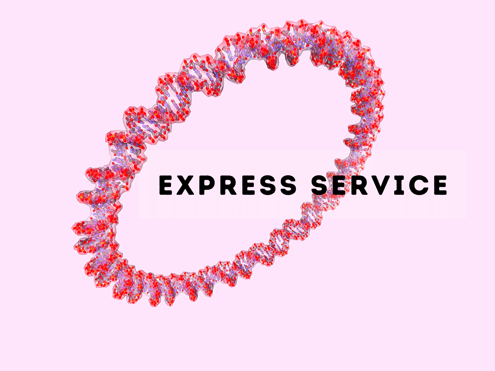
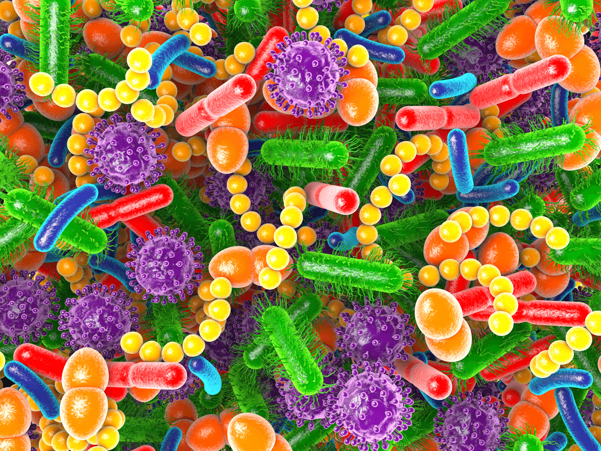

---
# front matter tells Jekyll to process Liquid
layout: splash
header:
overlay_image: /assets/img/UTS-Sequencing.png
overlay_color: black
image_description: Sequencing at UTS - UTS Next Genreation Sequencing Facility
---
UTS Next Generation Sequencing Facility
Located within the ithree institute, we offer next generation DNA sequencing on the Illumina platform and bioinformatic services. Our aim is to provide affordable support for internal and external researchers, students and industry to generate genomic data.
Bacterial Whole Genome Sequencing
We offer a comprehensive DNA to Database package. For 80 AUD, we provide:
Short read Illumina sequencing data
An assembly of the bacterial genome
Submission of the data to the NCBI database with a 1-year embargo
Volume discounts are available for large sample batches
Small Target Express DNA Sequencing
The service is suitable for small plasmids and other dsDNA targets up to 20 kbp.
Services include:
Fast turnaround time 48-72 hrs after submission
QC DNA
Library preparation
Sequencing on Miseq V2 2x150 bp
Optional assembly services


16S rRNA Amplicon Sequencing
Services include:
QC genomic DNA
Library preparation
Sequencing on Miseq V3 2x300 bp
Minimum 80,000 reads per sample
OTHER TYPES OF SEQUENCING
We also offer other types of sequencing including:
Get in touch with the UTS Sequencing Facility to learn more about our services and what we can do for you.
E-mail: ngsfacility@uts.edu.au
Call: (+61) 2 9514 1601